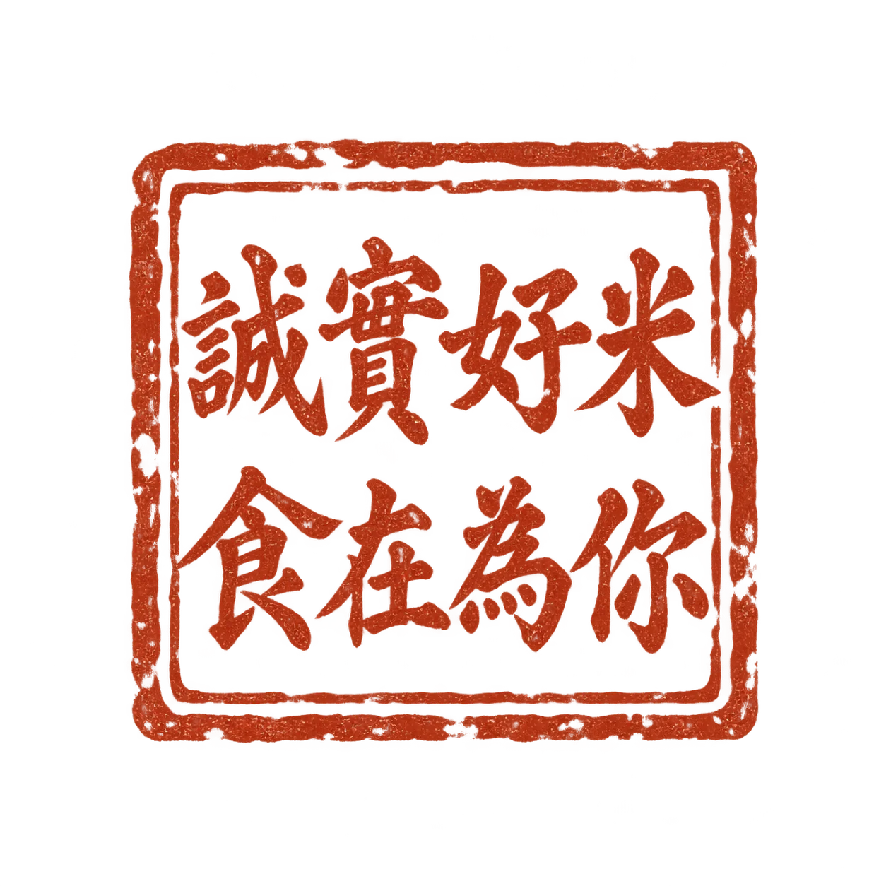
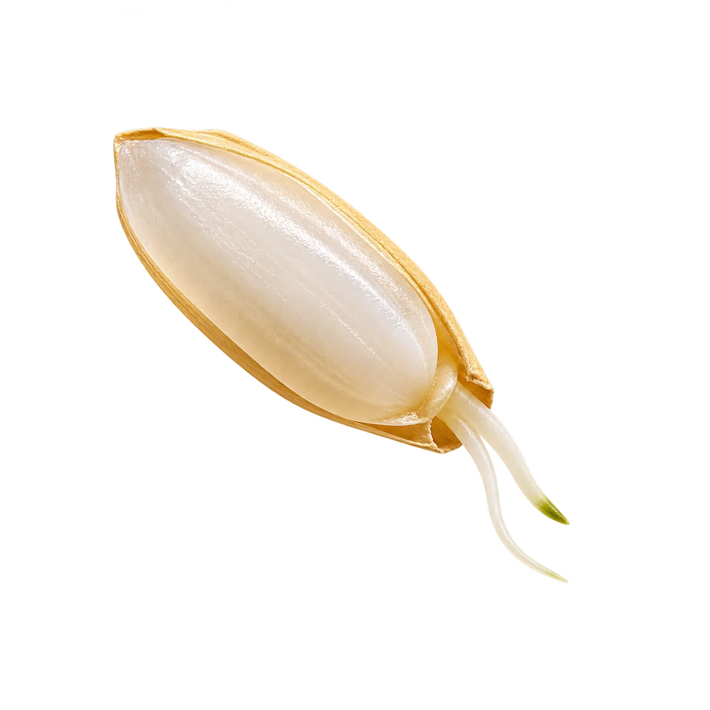
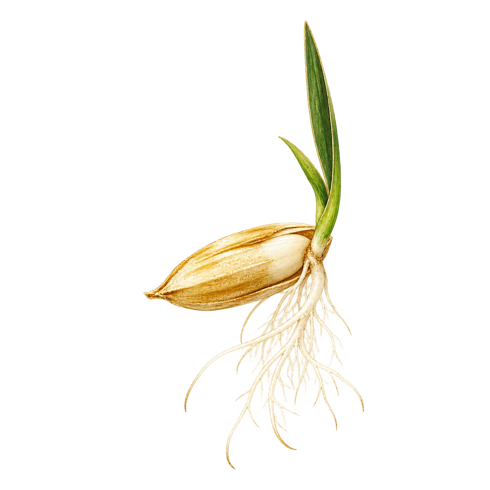
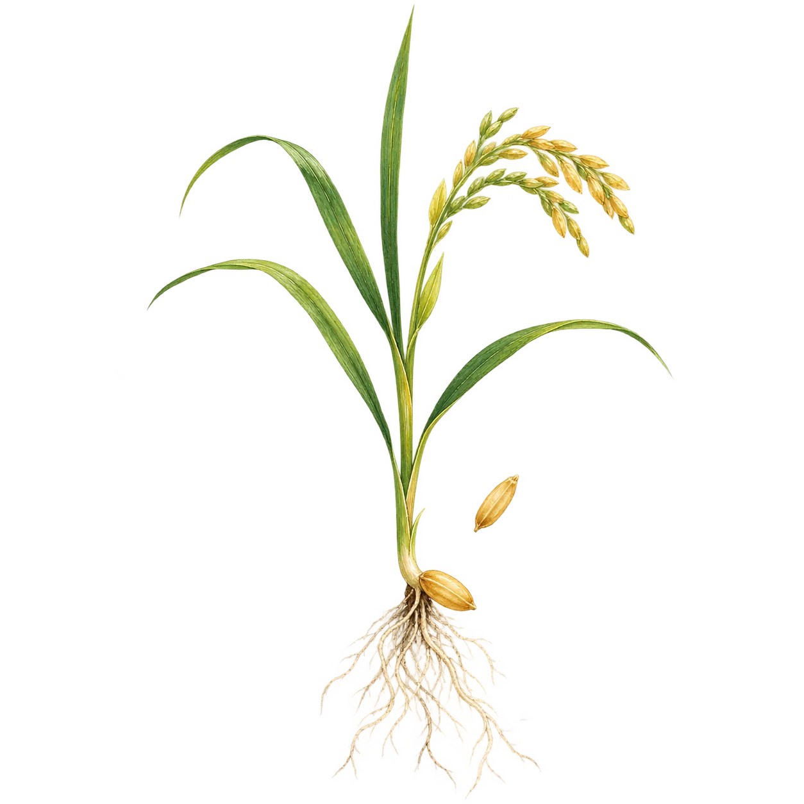

形象網站
建立可被搜尋、理解與信任的品牌數位基礎。
建立｜品牌基礎・搜尋信任

從種植到收成，從產線到餐桌
三光米已經累積了品質把關、產品發展與企業經營的深厚實力
接下來，我們要透過網路行銷
讓更多人看見品牌形象、認識多元產品，也理解每一粒米背後的價值與堅持
新米感，是用新的方式說出一碗米原本就有的溫度。讓更多人看見、理解，也重新感受米與生活的距離。



建立可被搜尋、理解與信任的品牌數位基礎。
持續累積內容、互動，以及對市場與受眾的理解。
讓累積的品牌價值延伸成合作、通路與市場機會。
活動、影片、網站與每一次企劃，都會留下瀏覽、觀看、搜尋、互動與詢問等市場反應我們把這些線索整理成理解，再回到下一次執行，讓品牌形成持續增強的良好循環
做得更多不是目的；越做越理解市場，才是企業真正累積下來的資產。
網站不只整理資訊，更讓三光米的品牌價值被搜尋、被看見、被理解、被信任，最後成為消費者願意選擇的理由。
我們想嘗試用更新穎、更有創意，也更溫暖的內容方式，把三光米的日常、產品與用心慢慢說給更多人聽，讓大家從一則貼文、一段影像開始認識三光米。
長期合作不是單一活動，而是讓品牌價值持續累積，再一步一步把關注轉化為產品合作與市場機會。
透過網紅開箱與內容合作，讓新的受眾第一次遇見三光米。
以品牌聯名與限定企劃，讓產品產生新鮮感與分享理由。
串接零售、餐飲與企業合作，讓好米進入更多使用場景。
累積品牌辨識與合作實績，逐步開啟國際通路與海外市場。
先建立品牌資訊、搜尋入口與數據蒐集的基礎 SOP，讓後續曝光與優化都有依據。
以好友與粉絲成長 200% 為階段目標，同步累積互動、內容偏好與市場反應。
正式目標將依現有基準、平台與執行期間校正。整合網站、搜尋與社群數據，持續增加有效曝光，並逐步找出更精準的溝通方向。